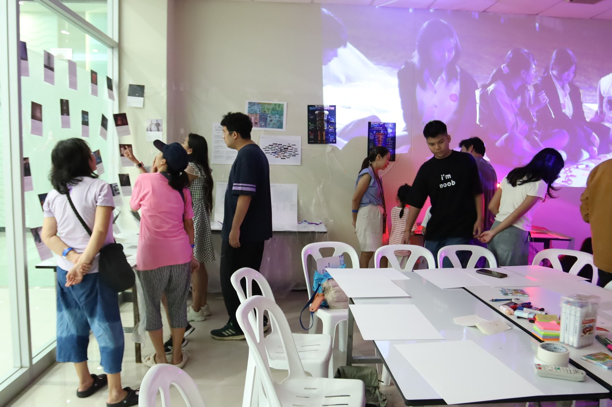
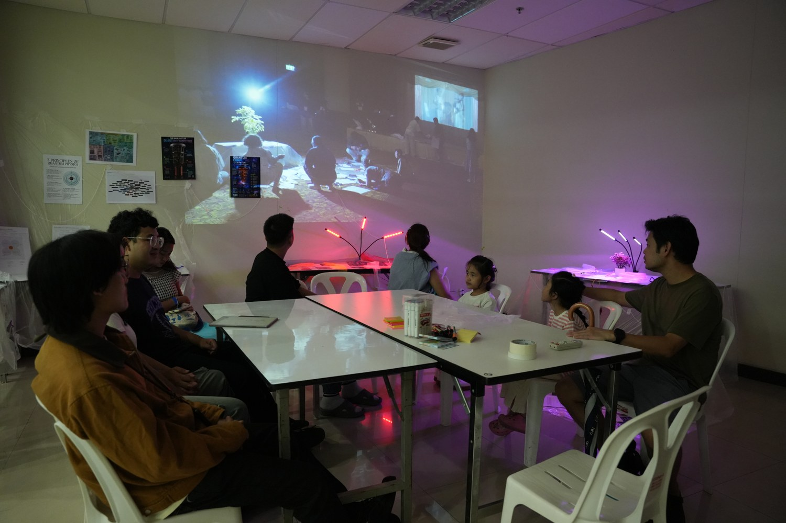
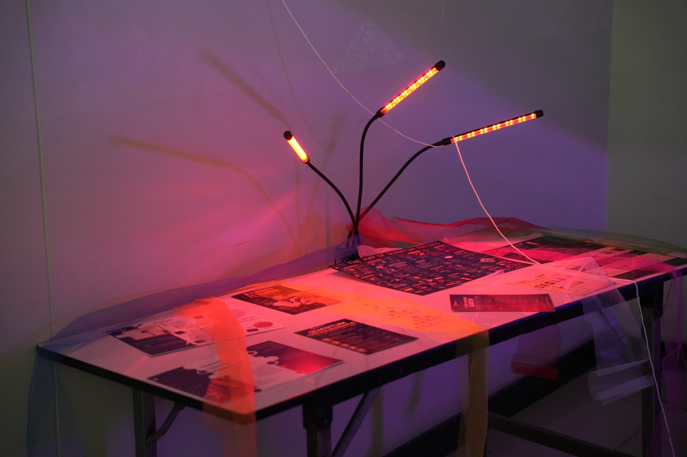
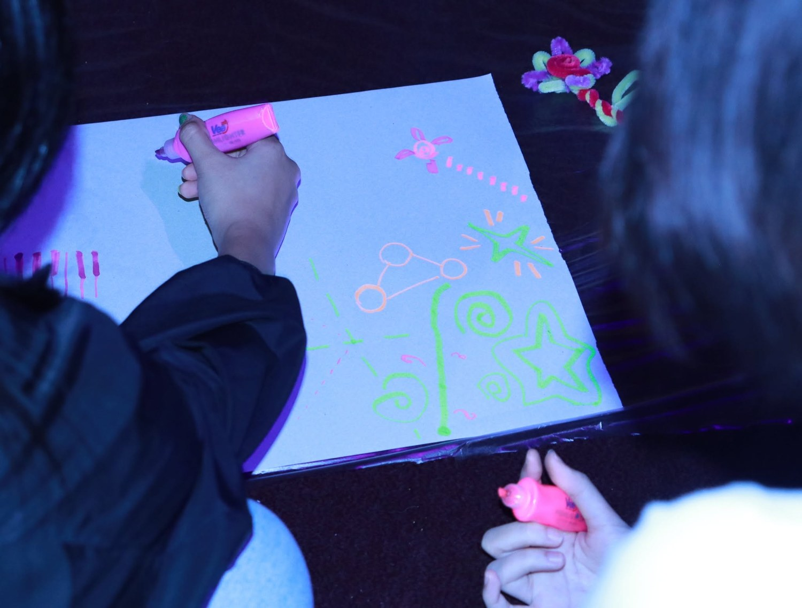
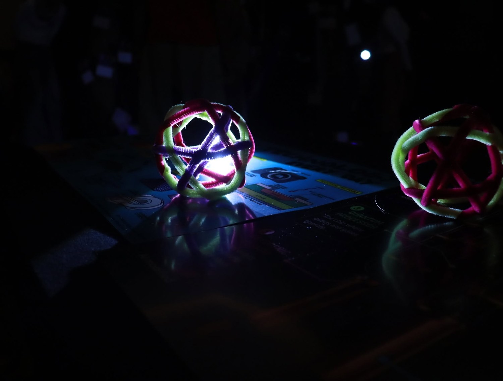
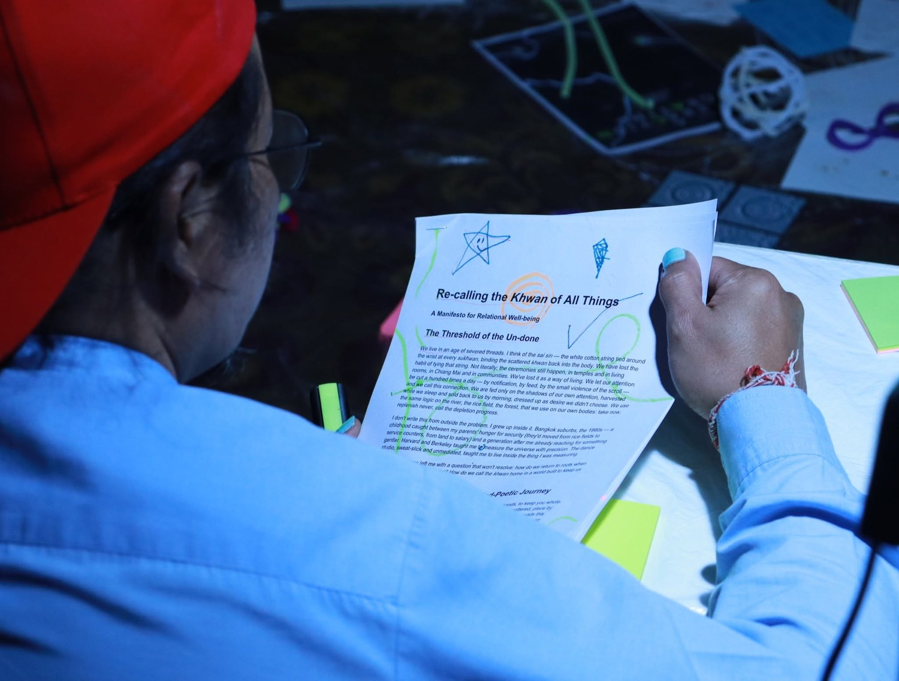

Workship ที่ชวนมาร่วมสร้าง Quantum Art Archive ของภูมิภาคนี้ และความเป็นไปได้ใหม่ โดยเอาแนวคิดควอนตัมมาเป็นเลนส์ทำงานศิลปะ ทั้งคุณสมบัติความเป็นคลื่น และความไม่แน่นอน ผ่านการทำกิจกรรมในรูปแบบ Interactive ที่แปลกให
Wave Pongruengkiat
Dr. Nitipat Pholchai
Thanaboon Katekeaw
Fring





